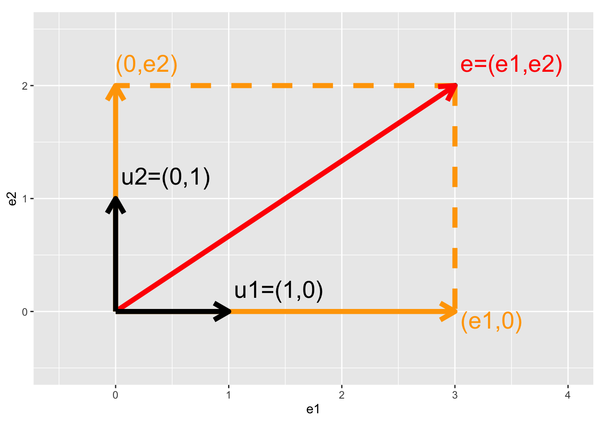

Intermezzo: Projection of vector on X and Y axis
\[
\mathbf{e}=\left[\begin{array}{c} e_1\\e_2\end{array}\right], \mathbf{u}_1 = \left[\begin{array}{c} 1\\0\end{array}\right], \mathbf{u}_2 = \left[\begin{array}{c} 0\\1\end{array}\right]
\]

- Projection of vector e on x-axis
\[\begin{eqnarray*}
\mathbf{u}_1^T \mathbf{e} &=& \Vert \mathbf{u}_1\Vert_2 \Vert \mathbf{e}_1\Vert_2 \cos <\mathbf{u}_1,\mathbf{e}_1>\\
&=&\left[\begin{array}{cc} 1&0\end{array}\right] \left[\begin{array}{c} e_1\\e_2\end{array}\right]\\ &=& 1\times e_1 + 0 \times e_2 \\
&=& e_1\\
\end{eqnarray*}\]
- Projection of vector e on y-axis
\[\begin{eqnarray*}
\mathbf{u}_2^T \mathbf{e} &=& \left[\begin{array}{cc} 0&1\end{array}\right] \left[\begin{array}{c} e_1\\e_2\end{array}\right]\\ &=& 0\times e_1 + 1 \times e_2 \\
&=& e_2
\end{eqnarray*}\]
- Projection of vector e on itself
\[\begin{eqnarray*}
\mathbf{e}^T \mathbf{e} &=&\left[\begin{array}{cc} e_1&e_2\end{array}\right] \left[\begin{array}{c} e_1\\e_2\end{array}\right]\\
&=&e_1^2+e_2^2\\
&=&\Vert e \Vert^2_2 \rightarrow \text{ Pythagorean theorem}
\end{eqnarray*}\]
Interpretation of least squares as a projection
Fitted values:
\[
\begin{array}{lcl}
\hat{\mathbf{Y}} &=& \mathbf{X}\hat{\boldsymbol{\beta}}\\
&=& \mathbf{X} (\mathbf{X}^T\mathbf{X})^{-1}\mathbf{X}^T\mathbf{Y}\\
&=& \mathbf{HY}
\end{array}
\]
with \(\mathbf{H}\) the projection matrix also referred to as the hat matrix.
X <- model.matrix(~x,data)
X
## (Intercept) x
## 1 1 1
## 2 1 2
## 3 1 3
## attr(,"assign")
## [1] 0 1
## (Intercept) x
## (Intercept) 3 6
## x 6 14
XtXinv <- solve(t(X)%*%X)
XtXinv
## (Intercept) x
## (Intercept) 2.333333 -1.0
## x -1.000000 0.5
H <- X %*% XtXinv %*% t(X)
H
## 1 2 3
## 1 0.8333333 0.3333333 -0.1666667
## 2 0.3333333 0.3333333 0.3333333
## 3 -0.1666667 0.3333333 0.8333333
Y <- data$y
Yhat <- H%*%Y
Yhat
## [,1]
## 1 1.166667
## 2 1.666667
## 3 2.166667
We can also interpret the fit as the projection of the \(n\times 1\) vector \(\mathbf{Y}\) on the column space of the matrix \(\mathbf{X}\).
So each column in \(\mathbf{X}\) is also an \(n\times 1\) vector.
For the toy example n=3 and p=2.
The other picture to linear regression is to consider \(X_0\), \(X_1\) and \(Y\) as vectors in the space of the data \(\mathbb{R}^n\), here \(\mathbb{R}^3\) because we have three data points.
So the column space of X is a plane in the three dimensional space.
\[
\hat{\mathbf{Y}} = \mathbf{X} (\mathbf{X}^T\mathbf{X})^{-1} \mathbf{X}^T \mathbf{Y}
\]
- Plane spanned by column space:
The other picture to linear regression is to consider \(X_0\), \(X_1\) and \(Y\) as vectors in the space of the data \(\mathbb{R}^n\), here \(\mathbb{R}^3\) because we have three data points.
originRn <- data.frame(X1=0,X2=0,X3=0)
data$x0 <- 1
dataRn <- data.frame(t(data))
library(plotly)
p1 <- plot_ly(
originRn,
x = ~ X1,
y = ~ X2,
z= ~ X3, name="origin") %>%
add_markers(type="scatter3d") %>%
layout(
scene = list(
aspectmode="cube",
xaxis = list(range=c(-4,4)), yaxis = list(range=c(-4,4)), zaxis = list(range=c(-4,4))
)
)
p1 <- p1 %>%
add_trace(
x = c(0,1),
y = c(0,0),
z = c(0,0),
mode = "lines",
line = list(width = 5, color = "grey"),
type="scatter3d",
name = "obs1") %>%
add_trace(
x = c(0,0),
y = c(0,1),
z = c(0,0),
mode = "lines",
line = list(width = 5, color = "grey"),
type="scatter3d",
name = "obs2") %>%
add_trace(
x = c(0,0),
y = c(0,0),
z = c(0,1),
mode = "lines",
line = list(width = 5, color = "grey"),
type="scatter3d",
name = "obs3") %>%
add_trace(
x = c(0,1),
y = c(0,1),
z = c(0,1),
mode = "lines",
line = list(width = 5, color = "black"),
type="scatter3d",
name = "X1") %>%
add_trace(
x = c(0,1),
y = c(0,2),
z = c(0,3),
mode = "lines",
line = list(width = 5, color = "black"),
type="scatter3d",
name = "X2")
p1
- Vector of Y:
Actual values of \(\mathbf{Y}\):
## [1] 1 2 2
\[
\mathbf{Y}=\left[\begin{array}{c}
1 \\
2 \\
2
\end{array}\right]
\]
p2 <- p1 %>%
add_trace(
x = c(0,Y[1]),
y = c(0,Y[2]),
z = c(0,Y[3]),
mode = "lines",
line = list(width = 5, color = "red"),
type="scatter3d",
name = "Y")
p2
- Projection of Y onto column space
Actual values of fitted values \(\mathbf{\hat{Y}}\):
## [1] 1.166667 1.666667 2.166667
\[
\mathbf{Y}=\left[\begin{array}{c}
1.1666667 \\
1.6666667 \\
2.1666667
\end{array}\right]
\]
p2 <- p2 %>%
add_trace(
x = c(0,Yhat[1]),
y = c(0,Yhat[2]),
z = c(0,Yhat[3]),
mode = "lines",
line = list(width = 5, color = "orange"),
type="scatter3d",
name="Yhat") %>%
add_trace(
x = c(Y[1],Yhat[1]),
y = c(Y[2],Yhat[2]),
z = c(Y[3],Yhat[3]),
mode = "lines",
line = list(width = 5, color = "red", dash="dash"),
type="scatter3d",
name="Y -> Yhat"
)
p2
\(\mathbf{Y}\) is projected in the column space of \(\mathbf{X}\)! spanned by the columns.
How does this projection works?
\[
\begin{array}{lcl}
\hat{\mathbf{Y}} &=& \mathbf{X} (\mathbf{X}^T\mathbf{X})^{-1}\mathbf{X}^T\mathbf{Y}\\
&=& \mathbf{X}(\mathbf{X}^T\mathbf{X})^{-1/2}(\mathbf{X}^T\mathbf{X})^{-1/2}\mathbf{X}^T\mathbf{Y}\\
&=& \mathbf{S}\mathbf{S}^T\mathbf{Y}
\end{array}
\]
\(\mathbf{S}\) is a new orthonormal basis in \(\mathbb{R}^2\), a subspace of \(\mathbb{R}^3\)
The space spanned by \(\mathbf{S}\) and \(\mathbf{X}\) is the column space of \(\mathbf{X}\), e.g. it contains all possible linear combinantions of \(\mathbf{X}\).
\(\mathbf{S}^t\mathbf{Y}\) is the projection of \(\mathbf{Y}\) on this new orthonormal basis
svdX <- svd(X) # SVD X = UDV^T
XtXinvSqrt <- svdX$v %*%diag(1/svdX$d)%*%t(svdX$v)
S <- X %*% XtXinvSqrt
- \(\mathbf{S}\) orthonormal basis
## [,1] [,2]
## 1 0.9116067 -0.04802616
## 2 0.3881706 0.42738380
## 3 -0.1352655 0.90279376
## [,1] [,2]
## [1,] 1.000000e+00 2.380172e-16
## [2,] 2.380172e-16 1.000000e+00
- \(\mathbf{SS}^T\) equals projection matrix
## 1 2 3
## 1 0.8333333 0.3333333 -0.1666667
## 2 0.3333333 0.3333333 0.3333333
## 3 -0.1666667 0.3333333 0.8333333
## 1 2 3
## 1 0.8333333 0.3333333 -0.1666667
## 2 0.3333333 0.3333333 0.3333333
## 3 -0.1666667 0.3333333 0.8333333
p3 <- p1 %>%
add_trace(
x = c(0,S[1,1]),
y = c(0,S[2,1]),
z = c(0,S[3,1]),
mode = "lines",
line = list(width = 5, color = "blue"),
type="scatter3d",
name = "S1") %>%
add_trace(
x = c(0,S[1,2]),
y = c(0,S[2,2]),
z = c(0,S[3,2]),
mode = "lines",
line = list(width = 5, color = "blue"),
type="scatter3d",
name = "S2")
p3
- \(\mathbf{S}^T\mathbf{Y}\) is the projection of \(\mathbf{Y}\) in the space spanned by \(\mathbf{S}\).
- Indeed \(\mathbf{S}_1^T\mathbf{Y}\)
p4 <- p3 %>%
add_trace(
x = c(0,Y[1]),
y = c(0,Y[2]),
z = c(0,Y[3]),
mode = "lines",
line = list(width = 5, color = "red"),
type="scatter3d",
name = "Y") %>%
add_trace(
x = c(0,S[1,1]*(S[,1]%*%Y)),
y = c(0,S[2,1]*(S[,1]%*%Y)),
z = c(0,S[3,1]*(S[,1]%*%Y)),
mode = "lines",
line = list(width = 5, color = "red",dash="dash"),
type="scatter3d",
name="Y -> S1") %>% add_trace(
x = c(Y[1],S[1,1]*(S[,1]%*%Y)),
y = c(Y[2],S[2,1]*(S[,1]%*%Y)),
z = c(Y[3],S[3,1]*(S[,1]%*%Y)),
mode = "lines",
line = list(width = 5, color = "red", dash="dash"),
type="scatter3d",
name="Y -> S1")
p4
- and \(\mathbf{S}_2^T\mathbf{Y}\)
p5 <- p4 %>%
add_trace(
x = c(0,S[1,2]*(S[,2]%*%Y)),
y = c(0,S[2,2]*(S[,2]%*%Y)),
z = c(0,S[3,2]*(S[,2]%*%Y)),
mode = "lines",
line = list(width = 5, color = "red",dash="dash"),
type="scatter3d",
name="Y -> S2") %>% add_trace(
x = c(Y[1],S[1,2]*(S[,2]%*%Y)),
y = c(Y[2],S[2,2]*(S[,2]%*%Y)),
z = c(Y[3],S[3,2]*(S[,2]%*%Y)),
mode = "lines",
line = list(width = 5, color = "red", dash="dash"),
type="scatter3d",
name="Y -> S2")
p5
- Yhat is the resulting vector that lies in the plane spanned by \(\mathbf{S}_1\) and \(\mathbf{S}_2\) and thus also in the column space of \(\mathbf{X}\).
p6 <- p5 %>%
add_trace(
x = c(0,Yhat[1]),
y = c(0,Yhat[2]),
z = c(0,Yhat[3]),
mode = "lines",
line = list(width = 5, color = "orange"),
type="scatter3d",
name = "Yhat") %>%
add_trace(
x = c(Y[1],Yhat[1]),
y = c(Y[2],Yhat[2]),
z = c(Y[3],Yhat[3]),
mode = "lines",
line = list(width = 5, color = "maroon2"),
type="scatter3d",
name = "e") %>%
add_trace(
x = c(S[1,1]*(S[,1]%*%Y),Yhat[1]),
y = c(S[2,1]*(S[,1]%*%Y),Yhat[2]),
z = c(S[3,1]*(S[,1]%*%Y),Yhat[3]),
mode = "lines",
line = list(width = 5, color = "orange", dash="dash"),
type="scatter3d",
name = "Y -> S") %>%
add_trace(
x = c(S[1,2]*(S[,2]%*%Y),Yhat[1]),
y = c(S[2,2]*(S[,2]%*%Y),Yhat[2]),
z = c(S[3,2]*(S[,2]%*%Y),Yhat[3]),
mode = "lines",
line = list(width = 5, color = "orange", dash="dash"),
type="scatter3d",
name = "Y -> S")
p6